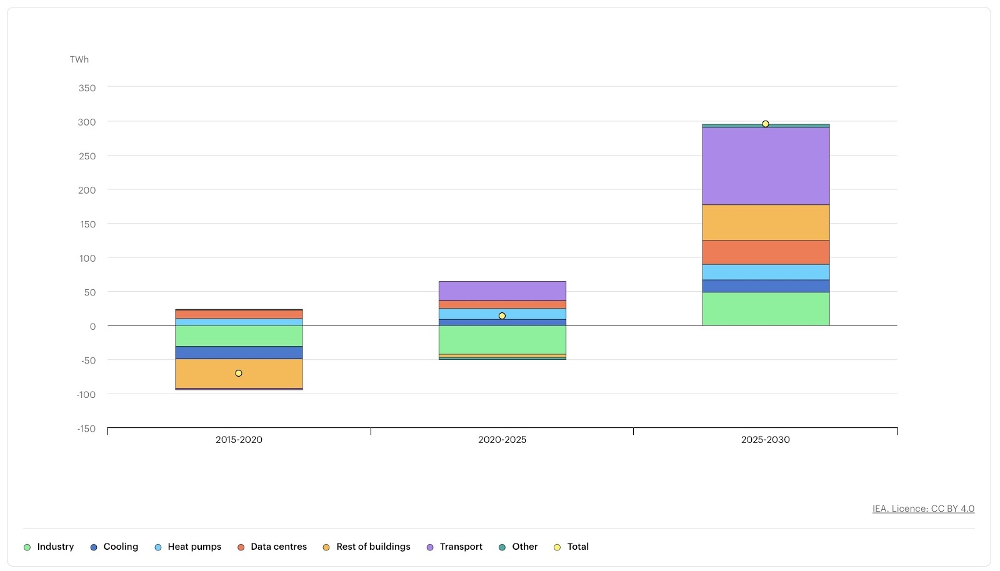
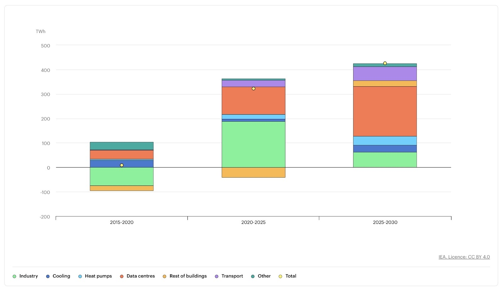
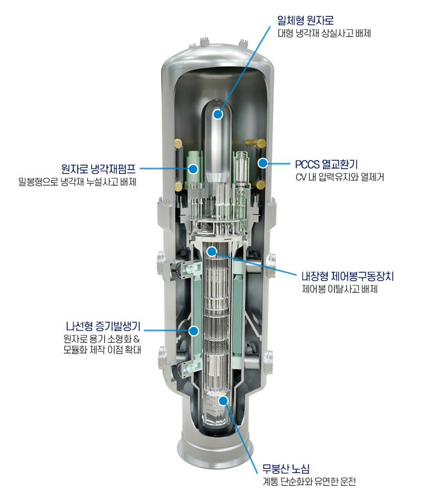
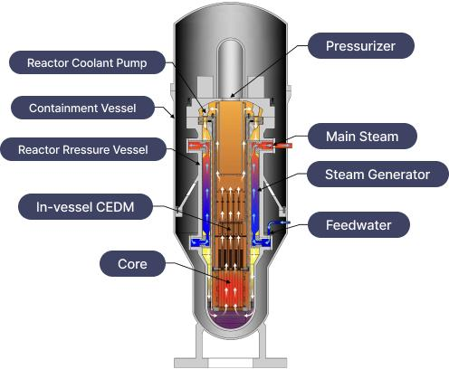

1. 문제 제기: 왜 우리는 에너지 문제에 주목했는가
SDG 7은 ‘모두를 위한 지속 가능하고 접근 가능한 에너지 보장’을 목표로 하는 유엔의 지속가능발전목표이다. 이 목표는 단순히 전기를 더 많이 생산하자는 의미가 아니라, 누구나 적절한 가격으로 안정적으로 에너지를 이용할 수 있도록 하고, 동시에 환경을 해치지 않는 방향으로 에너지 시스템을 전환하자는 의미를 가진다.
그러나 현재의 에너지 시스템은 이러한 목표를 충분히 달성하지 못하고 있다. 인공지능 기술의 발전, 데이터센터의 확대, 전기자동차의 보급 증가, 산업 고도화 등으로 인해 전력 수요는 빠르게 증가하고 있다. 반면 기존의 에너지 공급 방식은 각각 분명한 한계를 가지고 있다. 화석연료는 많은 전력을 생산할 수 있지만 탄소 배출 문제를 피할 수 없고, 재생에너지는 친환경적이지만 발전량이 날씨와 시간에 따라 크게 달라진다. 기존 대형 원자력 발전소는 안정적인 공급이 가능하지만 건설 기간이 길고 초기 비용이 매우 크다는 문제가 있다.
이러한 상황은 결국 하나의 질문으로 이어진다.
“탄소 배출을 줄이면서도 안정적이고 지속적으로 전력을 공급할 수 있는 현실적인 대안은 무엇인가?”
우리 팀은 이 질문에 대한 답으로 SMR(소형모듈원자로)에 주목하였다.
2. 공감 및 원인 분석
에너지 수요 증가는 왜 심각한 문제인가
최근 전 세계 에너지 소비는 빠르게 증가하고 있다. 자료에 따르면 최근 5년간 에너지 소비는 연평균 약 3.6% 증가했으며, 이는 그 이전 10년 평균 증가율보다 약 50% 높은 수치이다. 또한 최근에는 재난 상황이 아닌 평상시에도 경제 성장보다 에너지 소비가 더 빠르게 증가하는 현상이 나타나고 있다.
특히 증가한 전력 수요의 상당 부분은 동아시아, 중국, 인도와 같은 개발도상국에서 발생하고 있으며, 선진국 역시 예외가 아니다. 과거에는 선진국의 전력 수요 증가가 크지 않았지만, 최근에는 데이터센터, AI 개발, 전기차, 첨단 산업 확대 등의 영향으로 다시 증가하는 모습을 보이고 있다. 이는 에너지 문제가 특정 국가만의 문제가 아니라 전 세계적인 구조 문제임을 보여준다.
최근 자료를 보면 에너지 소모가 5년 동안 매년 평균 3.6% 증가했다. 이는 전 10년의 매년 평균 증가율 보다 50%더 크다. 30년의 최초로 재난 상태가 아닌 상황에서 경제적 성장보다 에너지 소모가 더 많이 증가했다. 동아시아, 중국, 인도 같은 개발국가가 증가한 소모의 80%를 차지하고 있다. 선진국의 에너지 소모 증가가 거의 없었지만 데이터 센터, AI 개발, 전기 자동차, 고급 가공으로 다시 증가하기 시작했다. 미래에는 매년 2% 증가할 것으로 예측된다.

Electricity demand growth by sector and end-use in the European Union, 2015-2030(선진국의 에너지 수요 증가와 데이터 센터와 전기차에 의한 증가의 시각화)

Electricity demand growth by sector and end-use in the United States, 2015-2030(선진국의에너지 수요 증가와 데이터 센터와 전기차에 의한 증가의 시각화)

Global electricity demand total growth by region, 2015-2030(에너지 수요의 증가의 대부분이 개발 중인 국가에서 나오고 있음과 미국, 유럽 뿐만 아니라 다른 선진국도 증가 중, 개발 중인 국가도 증가율이 증가하는 중.)

핵발전의 증가는 거의 없다. 초록 에너지가 증가를 많이 했지만 아직도 화석 연료가 50% 이상 차지하는 중이다.
3. 해결책 도출
왜 하필 SMR인가
우리 팀은 증가하는 전력 수요와 재생에너지의 한계를 동시에 고려했을 때, SMR이 기존 에너지 시스템의 문제를 보완할 수 있는 현실적 대안이라고 판단하였다. SMR은 Small Modular Reactor의 약자로, 전기 출력 약 300MW 이하로 설계된 소형 원자로이다. 기존 대형 원전과 달리 주요 설비를 공장에서 모듈 형태로 제작한 뒤 현장에서 조립하는 방식을 사용한다. 이를 통해 제작 과정의 표준화가 가능하고, 건설 기간 단축과 초기 비용 부담 완화라는 장점을 기대할 수 있다.
SMR의 구조적 특징
SMR의 대표적인 특징은 일체형 구조이다. 기존 대형 원전은 원자로 노심, 증기발생기, 냉각계통 등이 분리되어 배관으로 연결되는 구조를 가지는 경우가 많다. 반면 SMR은 주요 구성 요소를 하나의 압력용기 내부에 통합하여 배관 길이를 최소화하고, 냉각수 유출 위험을 구조적으로 줄이도록 설계된다. 이러한 구조는 단순히 “작게 만든 원전”이라는 의미를 넘어서, 사고 가능성을 줄이기 위한 설계적 개선이라는 점에서 의미가 있다.
또한 SMR은 격납 구조를 강화하고 전체 시스템을 단순화함으로써 유지·관리 효율을 높이고 고장 가능성을 낮추는 방향으로 설계된다. 즉, 구조의 단순화가 곧 안전성 향상과 연결되는 형태라고 볼 수 있다.


SMR의 안전성
SMR의 가장 큰 강점 중 하나는 피동안전시스템의 적용이다. 피동안전시스템은 외부 전력이나 복잡한 기계 장치, 사람의 즉각적인 개입 없이도 자연대류, 중력, 열전도와 같은 자연적 물리 현상을 이용해 원자로를 냉각할 수 있도록 설계된 시스템이다. 따라서 정전이나 설비 고장과 같은 비상 상황에서도 원자로의 안전성을 유지할 가능성이 높다.
또한 일체형 구조는 냉각수 유출 사고 가능성을 줄이고, 제어봉 낙하 방식은 비상 상황에서 핵반응이 자동으로 멈추도록 돕는다. 일부 설계에서는 붕산 사용을 줄이거나 배제하는 방식도 검토되고 있어 시스템을 더 단순하게 하고 폐기물 문제를 완화하는 방향도 모색되고 있다. 이러한 점은 SMR이 단순히 규모만 축소한 원자로가 아니라, 안전성과 운영 효율을 함께 고려한 차세대 원자력 시스템임을 보여준다.
SMR의 경제성과 유연성
SMR은 공장에서 표준화된 형태로 제작한 뒤 현장에 설치하는 방식을 사용하기 때문에 품질의 균일성을 확보하기 쉽고, 기존 대형 원전에 비해 건설 기간을 줄일 수 있다는 장점이 있다. 또한 필요에 따라 모듈을 추가 설치할 수 있기 때문에 초기 투자 부담을 비교적 낮출 수 있다
더 중요한 점은 출력 조절의 유연성이다. 대형 원전은 일반적으로 일정한 출력을 유지하며 기저전력을 담당하는 데 강점이 있지만, 재생에너지와 함께 운용할 때는 출력 조절이 상대적으로 까다롭다. 반면 SMR은 전력 수요 변화에 따라 보다 유연하게 출력을 조절할 수 있어 태양광, 풍력과 같은 변동성 높은 재생에너지를 보완하는 역할을 할 수 있다.
SMR의 활용 가능성
SMR은 전력 생산 외에도 다양한 방식으로 활용될 수 있다. 전력망이 부족한 지역에서는 안정적인 전력 공급원으로 사용될 수 있고, 산업단지에서는 공정열 공급원으로 이용될 수도 있다. 또한 해수 담수화, 지역 난방, 수소 생산 등과 결합하여 복합적인 에너지 시스템을 구성할 가능성도 있다. 따라서 SMR은 단순한 발전 설비를 넘어, 향후 다양한 에너지 문제를 해결할 수 있는 에너지 플랫폼으로 확장될 수 있다.
4. 실행 및 알리기
시뮬레이션을 통해 무엇을 확인하고자 했는가
우리 팀은 단순히 SMR이 이론적으로 좋아 보인다고 결론 내리지 않고, 실제 전력 수급 구조 속에서 어떤 역할을 할 수 있는지 보기 위해 시뮬레이션을 진행하였다. 핵심 질문은 다음과 같았다.
“우리나라 전력망에 i-SMR을 실제로 도입한다면, 재생에너지와 함께 어떤 방식으로 운영될 수 있을까?”
시뮬레이션 설정
시뮬레이션에서는 우리나라에서 개발 중인 i-SMR 40기를 도입하고, 기존 원자력발전소 15기를 단계적으로 영구 정지하는 시나리오를 설정하였다. 기존 원전을 일부 정지한 이유는 태양광 발전 비중이 확대되었을 때 낮 시간대에 발생할 수 있는 과잉 전력 생산 문제를 완화하기 위해서이다.
일반적으로 낮 시간대에는 태양광 발전량이 크게 증가하지만, 같은 시간대에 전력 수요가 반드시 그만큼 증가하는 것은 아니다. 오히려 점심 시간대처럼 산업 활동과 소비 패턴이 변하는 구간에서는 전력 수요가 상대적으로 낮아질 수 있다. 이 경우 공급이 수요보다 많아져 전력망 운영에 부담을 줄 수 있다.
시뮬레이션 결과 해석
이때 SMR은 출력 조절이 가능하다는 장점을 활용할 수 있다. 태양광 발전이 활발한 시간대에는 출력을 낮추고, 반대로 태양광 발전량이 줄어드는 시간대나 수요가 증가하는 시간대에는 출력을 높이는 방식으로 운영할 수 있기 때문이다. 이는 SMR이 단순한 기저전력 공급원이 아니라, 전력 수급 균형을 유연하게 조정하는 장치로 작동할 수 있음을 보여준다.
결국 이 시뮬레이션은 SMR이 재생에너지와 경쟁하는 기술이 아니라, 오히려 재생에너지 확대 과정에서 나타나는 변동성과 과잉 생산 문제를 보완할 수 있는 기술임을 시사한다. 즉, SMR은 태양광·풍력과 함께 작동하는 보완적 에너지 솔루션으로 볼 수 있다.
5. 프로젝트 진행 과정
데이터 수집 과정
프로젝트를 진행하면서 가장 먼저 SDG 7의 목표와 현재 글로벌 에너지 문제를 조사하였다. 이후 전력 수요 증가의 원인을 구체적으로 파악하기 위해 데이터센터, 전기자동차, AI 산업의 전력 소비 확대와 관련된 자료를 조사하였다. 또한 지역별 전력 수요 증가 차이, 재생에너지 발전 비중, 원자력 발전 비중 등을 비교하여 문제의 구조를 파악하고자 하였다.
분석 및 정리 과정
수집한 자료는 단순 나열이 아니라 시각화를 통해 비교·분석하였다. 전력 수요 증가의 주된 원인이 무엇인지, 어느 지역에서 증가 폭이 큰지, 재생에너지 확대만으로 해결하기 어려운 이유가 무엇인지를 그래프와 표를 통해 정리하였다. 이를 바탕으로 문제의 원인을 재생에너지의 간헐성, 저장 기술의 한계, 기저전력 부족이라는 세 가지 핵심 축으로 정리하였다.
해결책 도출 과정
이후 여러 에너지 대안을 비교하였고, 그중에서도 재생에너지와 병행 운용이 가능하면서 안정적인 전력 공급을 담당할 수 있는 SMR을 주요 해결책으로 설정하였다. 이 과정에서 SMR의 개념, 구조, 안전성, 경제성, 활용 가능성 등을 조사하여 해결책의 타당성을 검토하였다. 그리고 단순 자료 조사에 그치지 않기 위해 실제 전력망 시뮬레이션 시나리오까지 구성하여 실행 가능성을 함께 탐구하였다.
6. 실행 가능성
SMR은 실제로 가능한 기술인가
SMR은 기존 핵분열 기술을 기반으로 설계된 원자로로, 완전히 새로운 원리를 사용하는 기술이 아니라 기존 원전 기술을 재구성하고 개선한 형태이다. 따라서 기술적으로는 이미 구현 가능한 수준에 도달해 있으며, 일부 국가에서는 실제 운용 사례도 존재하고 설계 인증을 받은 모델도 등장하고 있다. 이 점에서 기술적 실현 가능성은 높은 편이라고 볼 수 있다.
아직 남아있는 한계
그러나 경제적 측면에서는 해결해야 할 문제가 남아 있다. 대형 원전에 비해 규모의 경제를 충분히 활용하기 어렵고, 아직 대량 생산 체계가 완전히 확립되지 않았기 때문에 초기 비용 부담이 존재한다. 또한 새로운 기술에 대한 투자 리스크와 정책적 불확실성도 상용화를 늦추는 요인이 될 수 있다.
사회적 수용성도 중요하다. 원자력 발전에 대한 인식은 국가와 사회 분위기에 따라 크게 달라질 수 있으며, 방사성 폐기물 문제 역시 여전히 해결해야 할 과제로 남아 있다. 따라서 SMR은 기술적으로 가능하다고 해서 곧바로 대규모 보급이 이루어지는 것이 아니라, 정책·경제·사회적 조건이 함께 갖추어져야 현실적인 대안으로 자리 잡을 수 있다.
종합 결론
종합적으로 볼 때 SMR은 단기적으로는 제한적인 도입이 예상되지만, 중장기적으로는 에너지 시스템에서 중요한 역할을 수행할 가능성이 높은 기술이다. 특히 재생에너지 확대와 전력 수요 증가가 동시에 진행되는 상황에서, SMR은 안정성과 유연성을 함께 가진 대안으로 평가될 수 있다.
7. 프로젝트를 통해 얻은 결론
이번 프로젝트를 통해 우리는 에너지 문제를 단순히 “더 많이 생산하면 된다”는 식으로 볼 수 없다는 점을 확인하였다. 현대 사회의 에너지 문제는 수요 증가, 환경 문제, 기술 한계, 경제성, 사회적 수용성 등이 복합적으로 얽혀 있는 구조적 문제이다. 따라서 해결책 역시 한 가지 기술만으로 단순하게 제시될 수 없으며, 여러 요소를 함께 고려하는 융합적 접근이 필요하다.
이러한 관점에서 SMR은 기존 대형 원전의 한계를 보완하면서도 재생에너지와 병행 운용될 수 있는 현실적 대안으로 볼 수 있었다. 특히 시뮬레이션을 통해 SMR이 출력 조절 능력을 활용하여 전력망 균형 유지에 기여할 수 있다는 점은, 이 기술이 단순한 발전 설비를 넘어 미래 에너지 시스템의 일부로 기능할 수 있음을 보여주었다.
9. About Us
김동건
역할
SDG7의 해결책으로서 SMR을 주제로 선정하고 전체 탐구 방향을 설정하는 팀장 역할을 수행하였다. SMR의 개념, 구조적 특징, 안전성, 경제성, 활용 가능성에 대한 자료를 조사하고 이를 체계적으로 정리하여 보고서의 핵심 내용을 구성하였다. 또한 기존 원전과의 차이점을 중심으로 SMR의 기술적·사회적 의의를 분석하고, 팀원들의 조사 방향을 조율하며 프로젝트 전반의 흐름을 관리하였다.
배운 점 및 느낀 점
SMR을 조사하는 과정에서 완전히 새로운 기술이 등장한 것이 아니라, 기존 핵분열 발전 구조를 바탕으로 안전성과 효율성을 개선하는 방향으로 발전하고 있다는 점이 인상 깊었다. 특히 구조적 단순화와 피동안전시스템 같은 설계적 개선이 기술 발전의 핵심이라는 점에서, 과학기술은 새로운 발견뿐 아니라 기존 기술을 재구성하는 과정에서도 발전할 수 있음을 깨달았다. 또한 SMR이 경제성, 설치 환경, 에너지 수요 등 다양한 요소를 함께 고려한 기술이라는 점에서, 현실 문제 해결에는 과학적 지식뿐 아니라 공학적·사회적 요소를 함께 고려하는 융합적 사고가 중요하다는 것을 느꼈다.
김인수
역할
프론트엔드 및 서버 등 웹사이트 프로젝트 관리를 맡았다.
배운 점 및 느낀 점
SMR 내용을 시각적으로 구조화하는 과정에서 데이터 처리와 시각화의 중요성을 느꼈고, 서버와 통신 프로토콜을 구현하는 과정에서는 의사소통 구조를 이해하고 사용자 편의성을 고려하여 기능을 설계하는 경험을 할 수 있었다.
박윤수
역할
SDG7에 대한 소개와 현재 에너지 수요 증가에 대한 문제 제시를 맡았다. 또한 에너지 수요 증가의 심각성을 보여 주는 그래프를 수집하고 해석했으며, SMR 설치 시뮬레이션도 담당하였다.
배운 점 및 느낀 점
기존에는 SDG15처럼 생물과 관련된 지속가능발전목표에 더 익숙했지만, 이번 프로젝트를 통해 SDG7의 중요성을 처음으로 깊게 이해하게 되었다. 특히 그래프를 통해 데이터센터, 전기차, 개발도상국과 선진국 모두에서 전력 수요가 증가하고 있다는 사실을 확인하면서 에너지 공급 문제의 심각성을 체감하였다. 또한 SMR의 장점이 완전히 새로운 과학 원리 때문이 아니라 기존 핵분열 발전 기술을 구조적으로 개선한 결과라는 점을 보며, 과학·경제·사회·공업을 함께 고려하는 융합적 사고의 중요성을 느꼈다.
전은찬
역할
SDGs와 에너지의 관계를 중심으로, 나라별 핵발전 비율과 소형 원자로 및 대형 원자로의 사용 비율, 그리고 에너지 생성 극대점과 관련된 자료를 조사하였다.
배운 점 및 느낀 점
에너지와 환경 문제 해결에 과학이 어떻게 기여할 수 있는지 조사하면서, 과학기술의 발전이 기존 기술의 한계를 보완하는 방향으로 이루어진다는 점을 알게 되었다. 또한 완전히 새로운 것이 아니더라도 생각의 전환과 연결을 통해 더 효율적인 해결책이 나올 수 있다는 것을 깨달았다. 자료를 분석하며 현재 세계의 에너지 수준과 미래 발전 가능성을 연결해 볼 수 있었고, 친구들과 토론하는 과정에서 소통 능력도 기를 수 있었다.